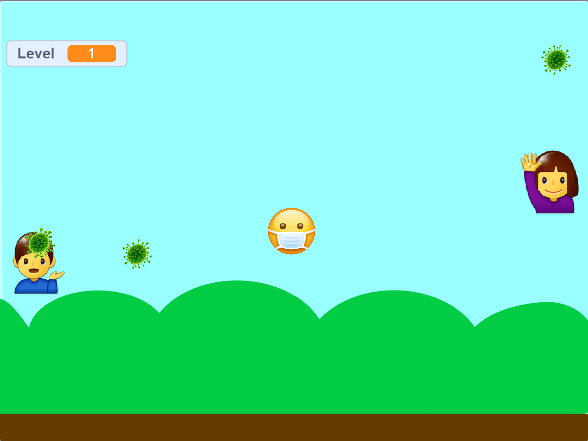

Hi! I would like to tell you about my CS50 Journey so far. Here I will make a list of all the different problems and projects I've tackled during CS50's Introduction to Computer Science. The main purpose of this journal is to be able to revisit some the concepts used throughout the course. Sit back and enjoy!
Week 0: Scratch
pset: The Covid Game
Week 0 of CS50 was fun. I was looking to start learning more serious programming language from the very beginning but I understand why starting with a programming language like Scratch can be a good warm-up to logic. For that week's pset I designed a game called 'The Covid Game'.
The Covid Game consist of a character controlled with the arrow keys. The objective is to avoid the virus as long as possible. The longer you survive the higher is the level of difficulty. Two characters on the side of the screen move up and down while coughing and releasing viruses in the process.
If you get the virus is game over! If you survive long enough without getting it then you win! The game has different sounds according to what is ocurring in the game as well as different backgrounds.
Week 1: C
pset: Mario, Cash & Credit
Finally! I was excited to start learning a "real" programming language. I had some experience with C++, Matlab, among others during university and I have to admit I wasn't that interested in learning them too deeply. But that has changed with CS50, I learned to love C and now think of it fondly. For the first pset I decided to go for the more confortable solution thinking that by doing that I would be in a better position to learn more concepts and practice more. By the end of the week I completed both problems even though it was optional. Granted that my solutions aren't the most elegant, but they are my solutions nontheless.
A notable thing for the mario problem was to learn the for loops! Mario Pset also reintroduced me to a process of problem-solving, that is the creation of a pseudocode and planning ahead. It also made me realize how difficult it is sometimes to find the root cause of a problem, so patience is imperative!
In this week I had two more problems: Cash and Credit. Like in the previous Mario problem I decided to complete both problems.
The problems did a pretty good job at introducing us to functions. Cash is a very simple problem using a greedy algorithm. It was easy so solve which made me feel optimistic about myself. But then I proceeded to complete Credit and that optimism was short-lived.
Credit is actually one of my favorites. The idea of implementing this real life use program to pre-determine the validity of a creditcard number was fascinating. Obviously, this problem was a lot more demanding than Cash but at the same time it was a lot more gratifying to complete.
Week 2: Arrays
pset: Readability, Caesar & Substitution
Functions, variables and arrays; week 2 add more to the interesting world of Computer Science, David Malan does a marvelous work simplifying concepts in a way they are easy to understand. The lectures are very interesting, and as I watch I'm already wondering what the psets are going to be about. For this week the problems at hand are about encryption. Using arrays and creating functions to scramble a message. During the lesson we learned to use debugging techniques to improve our programming process.
During the problem resolution I learned a lot from the C documentation where we can learn how to use the different functions avaiable by including headers or packages. For substitution, for example, I used the strlen, isalpha, tolower and toupper functions.
Week 3: Algorithms
psets: Plurality & Runoff
Do you give searching for granted? I sure did! Until I attended week 3 of CS50. Is when you look at the details that you understand not everything is as simple as it may seems. In this week's lecture we learnt about some of the algorithms used for sorting such as, bubble sort, selection sort and merge sort. Additionally, we get introduced to the very memeable concept of recursion.

So far I have been completing all the psets regardles of them being optional or not. And for the first time I had to skip on one of the problems that I have to admit I wasn't able to solve all by myself, and that is Tideman. I told myself that eventually I would comeback when ready and complete it, and after a few weeks, I did! I wanted to complete the Tideman problem before beginning the Python week because I didn't want to move on to another programming language while having a commitment with a C problem.
Week 4: Memory
psets: Filter & Recover
And the plot thickens! That's right, the concept of pointers came to take over. Pointers are infamous in C and for a good reason. Interestingly, I didn't feel intimidated by them at all, in fact, I kind of like them. One of the advantages of learning a programming language like C first is that we are more open-minded to more 'backwards' concepts like malloc (memory allocation) and pointers. Imagine coming from a programming language where these things are given for granted and now all of a sudden these need to be taken care of manually. I understand the struggle. This week we also talked about hexadecimal numbers, in close relation with our first problem Filter.
Cool image? Yeah, in our first problem I had to implement a program to apply filters to images. Is these kind of moments that make me realize how sometimes we as users sometimes don't bother to wonder how things work. To look at this and understand that I'm modifying the 1's and 0's of a file to make it look different is a mind-blowing thought. This is definely one of my favorite problems from the course. I love things that are aplicable to real life uses and to have a look into what is going on under the hood is always a treat. The second problem is Recover, which I found very confusing at first but eventually made me understand better how to 'open', 'read' and 'write' on files; a link that was missing until now.
Week 5: Data Structures
pset: Speller
This week felt very packed on information. We are introduced to concepts such as slack and queues, I love to continue to look under the hood and better understand the inner processes. A notable topic covered in this lecture was hash tables and tries, which gave us a look into how search engines handle queries and the trade off that comes from using these schemes.
 Image source: geeksforgeeks
Image source: geeksforgeeks
In the Speller problem I had to complete a series of functions for a program able to analize your spelling. The most interesting part of this problem, in my opinion, was the creation of a hash function. Depending of how your hash function is designed, the speed of your program can be impacted. I'm proud to say that I created my own hash function, it consist of arbitrary values given to each letter as well as modifier properties, each word would run different calculations providing a number for my hash table. I decided to go with 999 buckets, probably not enough buckets lol.
Week 6: Python
psets: Sentimentals & DNA
Moving on from C sure made me feel sentimental about it. While some people were happy to no longer work with C I can say I was left feeling a bit sad because C was starting to grow on me, what can I say? I get attached quite fast. That being said, Python did not disappoint, it is a very pragmatical language that is relatively easy to understand and doesn't require too much hand-holding, no more malloc or keeping tabs on pointers.
The psets for this week consisted in redoing the previous problems completed in C, now in Python. It really feels different, and Python's concise syntax does makes a difference. In addition we had a problem called DNA (in the image above). It was a mildly interesting problem manipulating files, allowing us to try some of Python's features, once I was able to get past the differences I felt fairly confortable using Python.
Week 7: SQL
pset: Movies & Fiftyville
SQL was a breath of fresh air. A very simple and straight-forward syntax, allowing us to handle big databases with ease. We were introduced to the concept of relational databases with real life examples. In the rest of the lecture we learnt more about how to operate SQL with plenty of examples, undestanding the purpose of primary and foreign keys and how to use relational dabases to access the data we require.
Fiftyville is by far the funnest problem in CS50 so far. In it we have to uncover a crime by using SQL queries. The level of creativity of CS50's staff is incredible. Overall, this week felt really refreshing, lots of useful interesting concepts and tools that left me wanting for more. By the way, I forgot to mention but the shorts available each week are incredibly rich in content and in some instances they are a life-saver, so if you haven't stopped to watch the shorts I'd recommend making time for them even if you feel you understood the lecture very well, shorts just add a well-needed layer of depth to the lectures.
That's all for now! To learn about week 8 visit my 'Read me' page in this website. If you have any questions or suggestions visit my Contact page. Cheers!